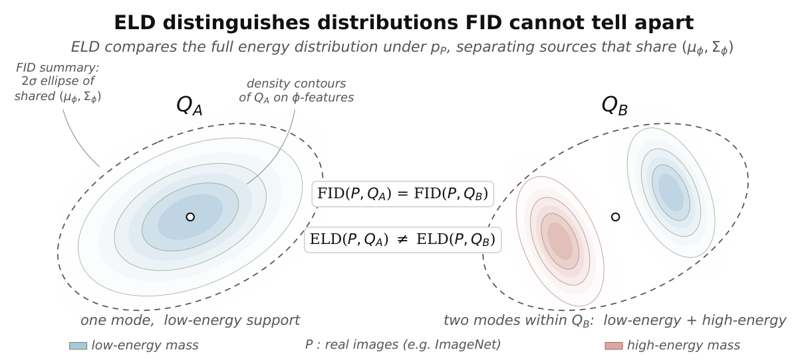

Score images
Use the same real-image density model for real and synthetic samples.
NeurIPS 2026 · Oral
Energy Distributions Predict
Visual Pretraining Quality
1 MIT CSAIL 2 Technical University of Munich
Synthetic data is useful when it covers the likelihood levels of real images.
ELD measures this coverage for visual pretraining.
Real images span a broad range of likelihoods. Selecting only the most likely synthetic samples can remove useful variation. The illustration below shows three ways a synthetic energy distribution can differ from the real reference.
Schematic distributions for intuition, not measured dataset energies. The slider illustrates distribution matching; it does not run the paper’s curation algorithm or predict accuracy.
Figure 1. Select a synthetic profile and move the slider to match the reference. ELD compares the full energy distribution; maximising mean likelihood can instead concentrate samples in a narrow energy band.
Synthetic data can scale visual pretraining, but current selection criteria only partially explain which datasets train strong representations. We propose using the energy profile of a dataset—the distribution of log-probability levels it occupies under a normalised real-image density model—as an audit and curation principle for synthetic data. To operationalise this view, we introduce Energy-Level Distribution Distance (ELD), which compares real and synthetic energy distributions. Real images span sparse high-likelihood scenes and dense low-likelihood textures, so useful synthetic data should cover this energy range rather than collapse to likely but low-variation samples. Across diverse synthetic datasets, ELD exposes mismatches missed by FID and predicts pretraining performance beyond FID, LPIPS variation, and feature-space recall, including across CNN and ViT self-supervised settings. We then use ELD to resample and mix synthetic sources, matching the real-image energy histogram while preserving diversity and improving downstream transfer.
Results for nine synthetic pretraining sources using DINO/ViT-S (Table 1). Change the axes to compare metrics, or select a source to see its samples and transfer accuracy.
Each point is a source, with fixed DINO/ViT-S pretraining hyperparameters. Click or keyboard-focus points to inspect them. ELD here is the paper’s percentile variant. Values are transcribed from Table 1.
| Source | ELD ↓ | FID ↓ | LPIPS ↑ | Recall ↑ | IN-1K linear ↑ | IN-1K FT ↑ | IN-C ↑ | IN-A ↑ |
|---|---|---|---|---|---|---|---|---|
| FractalDB | 0.426 | 1254 | 0.260 | 0.018 | 23.91 | 56.66 | 18.70 | 10.30 |
| Perlin noise | 0.427 | 1922 | 0.208 | 0.000 | 21.53 | 55.38 | 16.79 | 9.11 |
| Gaussian noise | 0.500 | 2145 | 0.237 | 0.000 | 20.26 | 52.26 | 15.53 | 5.01 |
| Diffusion · high CFG | 0.138 | 481 | 0.342 | 0.020 | 28.18 | 59.34 | 21.41 | 10.84 |
| StyleGAN3 | 0.309 | 1148 | 0.305 | 0.001 | 24.71 | 57.49 | 18.34 | 10.59 |
| BigGAN | 0.112 | 566 | 0.303 | 0.101 | 28.36 | 58.97 | 18.10 | 10.35 |
| Diffusion · mid CFG | 0.088 | 459 | 0.338 | 0.030 | 29.17 | 59.57 | 21.44 | 12.35 |
| Diffusion · low CFG | 0.153 | 1129 | 0.297 | 0.022 | 28.67 | 59.60 | 21.38 | 11.99 |
| Uniform mixture | 0.112 | 616 | 0.294 | 0.023 | 27.45 | 57.61 | 20.80 | 11.07 |
Across the DINO/ViT-S suite, ELD and ImageNet-1K linear accuracy have a Spearman correlation of −0.87. In the complementary CNN-based “Learning to See” experiments, within-family comparisons are informative, while pooled robustness correlations are weaker. Semantic coverage and feature diversity remain important.
Score once under a normalised real-image density model. Compare the resulting one-dimensional distributions. Then use the mismatch to guide data selection.
Use the same real-image density model for real and synthetic samples.
ELD is the Wasserstein-1 distance between the two energy distributions.
Resample and mix sources to fill missing energy bands, preserving diversity within them.
EP(x) = −log pP(x)
ELD(P, Q) = W1((EP)#P, (EP)#Q)
The # notation maps each image distribution to its energy distribution.The percentile variant maps energies through the real-energy CDF. Real-image ranks are uniform; pELD measures how far synthetic ranks depart from that reference and removes dependence on the absolute energy scale.
Two datasets can match in energy while differing in semantics or feature diversity. ELD complements FID, LPIPS variation, and recall. Its interpretation also depends on the chosen density model.

Figure 1. Feature-moment agreement does not determine energy-profile agreement.
The energy profile provides a criterion for choosing samples and mixing synthetic sources. Matching it does not ensure semantic coverage or feature diversity, and the choice of density model matters. We use ELD alongside feature-space metrics to make these different properties visible.
Read the full paper ↗@inproceedings{choi2026shaping,
title={Shaping Useful Noise: Energy Distributions Predict Visual Pretraining Quality},
author={Choi, Ching Lam and Torralba, Antonio and Isola, Phillip and Jegelka, Stefanie},
booktitle={Advances in Neural Information Processing Systems},
url={https://chinglamchoi.github.io/docs/noiseAudits.pdf},
year={2026}
}